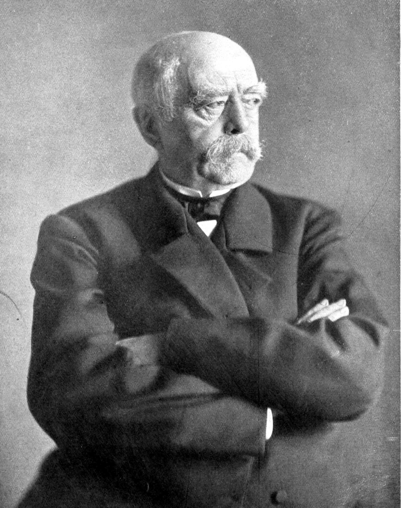

Cries of Valhalla

Otto von Bismark is one of my favorite historical figures. He accomplished two main
tasks while alive. First he unified the different states of Germany into an empire.
While Chancellor, Otto von Bismark kept Germany at peace with other European powers.
Bismark was a revolutionary conservative and a hero to German nationalists.
Interesting facts about Bismark
- When Otto Von Bismark became its Prime Minister in 1862, Prussia was a second-rate
power overshadowed by Russia
- Bismark had destroyed the entire European balance of power in the space of seven
years.
- The newly-unified German state was soon exploding with industrial energy,
outstripping British coal and steel production by the end of the century, and
leaping ahead in new industries. For example, chemical and electrical products were
being made in plants in Germany
- When Bismark retired in 1890, Prussiawas the dominant part of a united German Empire which had become the greatest power in Europe.
Random Box
Click and hold the mouse button down while moving the this box